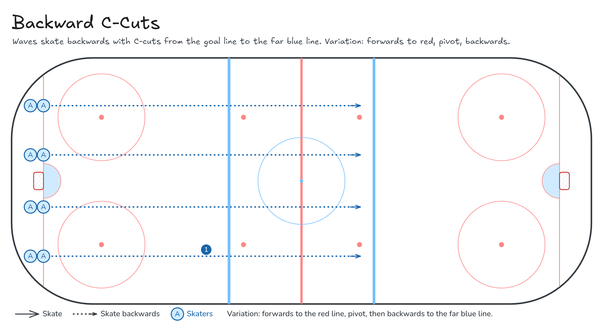

Backward C-Cuts
Waves skate backwards with C-cuts from the goal line to the far blue line. Variation: forwards to red, pivot, backwards.
- Full ice
- Skating
Watch
Diagram

Coaching points
- Sit low like you're in a chair. Chest up, eyes up.
- Push out in a C shape and pull your skate back under you.
- Switch feet each push. Keep your shoulders square.
- Stick on the ice in front of you.
- Pivot: turn your hips, not just your shoulders, and keep your feet moving.
How it runs
- 4 lanes on the goal line.
- Skate backwards with C-cuts to the far blue line.
- Glide back along the boards.
- Variation: forwards to the red line, pivot, then backwards to the far blue line.
Downloads

Open the Excalidraw file in Excalidraw to change the diagram.